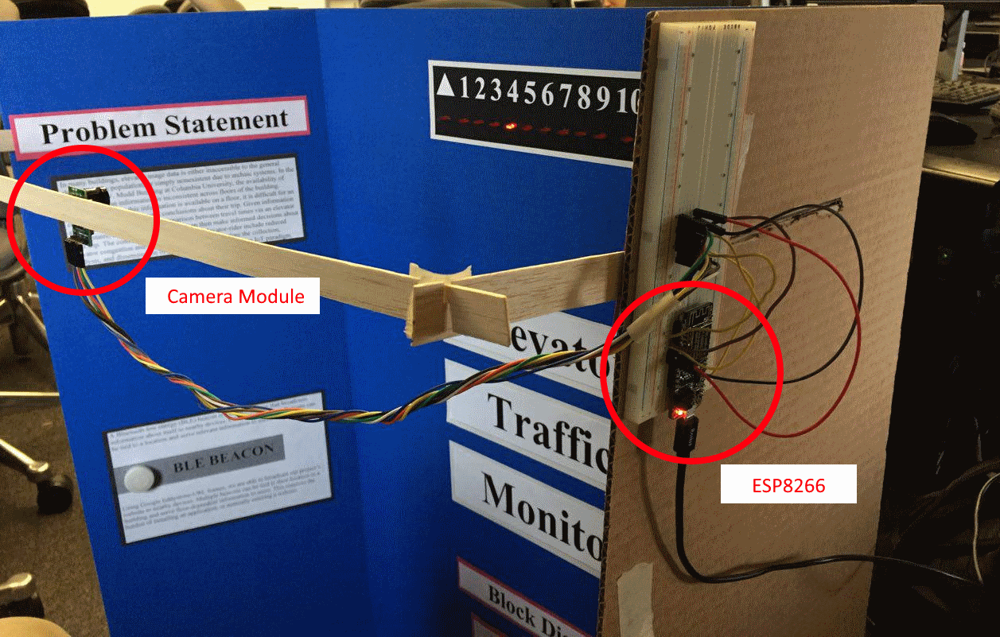
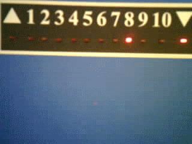
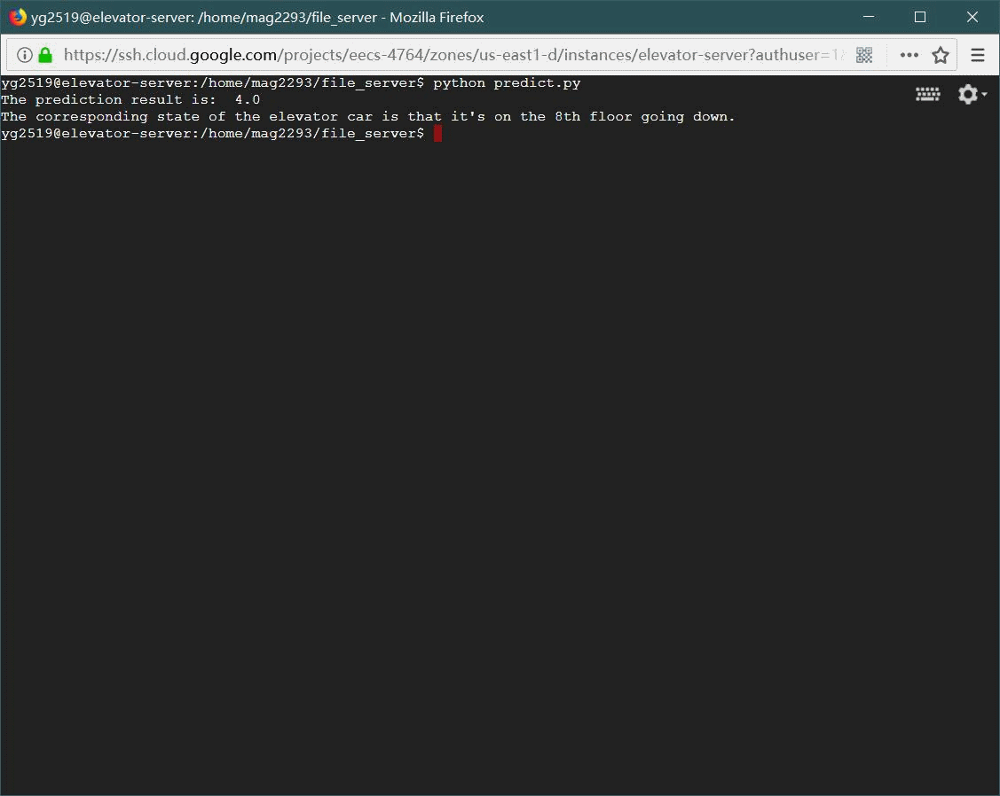
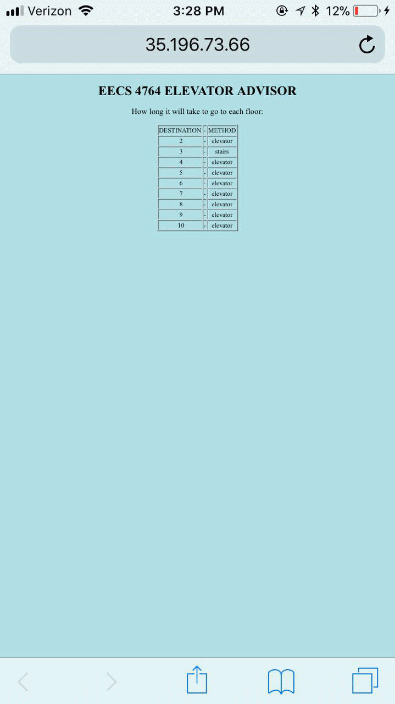

Rui Ge
Masters student studying Computer Engineering at Columbia UniversityLinkedIn
Columbia University
EECS E4764 Fall'17 Internet of Things
Intelligent and Connected Systems
Team 7 Project Report
If you're running late, should you wait for an elevator or take the stairs?
Our Elevator Traffic Monitor is a low-cost, adaptable system that collects and analyzes elevator usage data, and provides feedback in the form of suggestions to elevator riders. By making this information accessible, we can help elevator-riders make informed decisions about how to reach their destination faster, and how to avoid elevator congestion.
In many buildings, elevator usage data is either inaccessible to elevator-riders, or simply nonexistent due to archaic systems. Often, elevator position indicators are only installed on certain floors. Additionally, even when this information is available on a floor, it is difficult for an elevator rider to draw relevant conclusions about their trip. Given an elevator car's position over time, we can extrapolate information about peak congestion times and make a comparison between travel times via an elevator versus stairs. A potential elevator-rider can then make an informed decision about their trip. By informing an elevator rider's decision-making, we can reduce overall elevator congestion and power consumption. Our system aims to be low-cost and flexible to provide these benefits to a majority of buildings.
The Elevator Traffic Monitor is divided into three sub-systems: data collection, data analysis, and information distribution. The data collection sub-system consists of a camera connected to a WiFi enabled microcontroller. This sub-system takes a snapshot of the elevator bank every 20 seconds (about the time an elevator spends stopped on one floor) and uploads it to a server setup on a Google Compute Engine instance. The images are timestamped and saved to a folder on the instance.
Next, the data analysis sub-system reads the elevator position from each image using an SVM that has been trained to recognize a specific type of elevator bank. This position/time value pair is then inserted into a database. From here, we calculate the average elevator velocity by time of day, and compare these values to pre-recorded velocities for trips taken via stairs. A table of travel mode suggestions is created based off of these comparisons. This table is updated with every new data entry.
These suggestions are highly dependent on what floor a user is in. To serve relevant, location-dependent information, we utilize a Physical Web approach. Bluetooth low energy (BLE) beacons broadcast Eddystone-URL frames that contain URLs tied to the floor the beacon is located. When a user accesses the webpage tied to the beacon nearest them, they receive relevant travel suggestions from their starting point.
Data Collection: >WiFi-Enabled Microcontroller - Adafruit Feather HUZZAH ESP8266 Development Board >Camera Module - Arducam OV2640
Data Analysis: >Computing Resources - Google Compute Engine >Image Processing - OpenCV >Data Analysis - Python
Information Distribution: >Webserver - Apache2 running on a Google Compute Engine Instance >Bluetooth Low Energy (BLE) Beacon - RadBeacon Dot
Our prototype was assembled on a tri-fold poster board. A simulated elevator indicator was constructed on the back wall of the poster. The camera was positioned far enough from the back wall to capture the entire length of the indicator.
 Model elevator indicator. LEDs are controlled by a simple elevator simulation script running on an Arduino.
Model elevator indicator. LEDs are controlled by a simple elevator simulation script running on an Arduino.
|
 ESP8266 Board connected to camera module positioned to capture the entire elevator indicator. |  Image taken and uploaded to our server by the ESP8266. |
|  |
Our trained SVM model is able to correctly identify the position of an elevator car from a photo of the elevator bank.

BLE Beacon broadcasts our project's URL to nearby devices. |

Table of travel suggestions served to users. |
Masters student studying Computer Engineering at Columbia UniversityLinkedIn
Masters student studying Electrical Engineering at Columbia University LinkedIn
Undergraduate Electrical Engineering student at Columbia University with an emphasis in networking and communications SEAS '18 LinkedIn
Rui Ge: rg3105@columbia.edu
Yuekun Guo: yg2519@columbia.edu
Miguel Angel Gutierrez: mag2293@columbia.edu
Columbia University Department of Electrical Engineering
Instructor: Professsor Xiaofan (Fred) Jiang